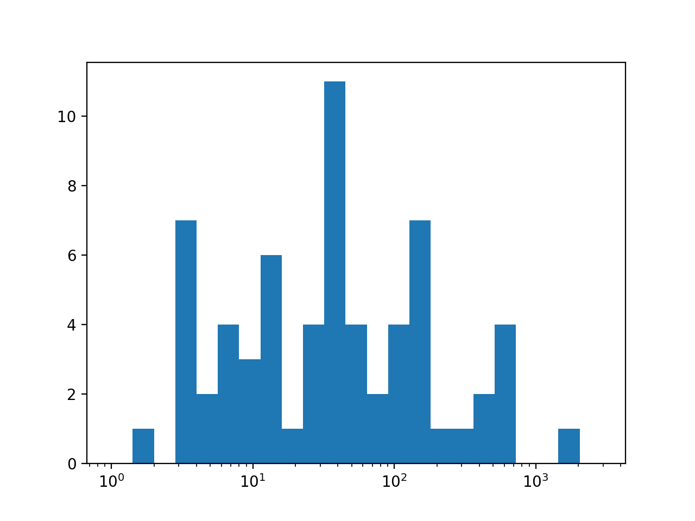

All submissions are anonymous, the data will be used for my independent research project. Thanks!
There is no survey/research project, however I did collect some data from this experiment which will be posted here as soon as I get around to analysing it. I hope everyone enjoyed my loading screen.
So I have a histogram of how long people looked at this in total on a logarithmic scale in seconds (if you waited for it then later tried to load it again, that time would be added up and counted as one data point). Sorry the x-axis isn't great.
